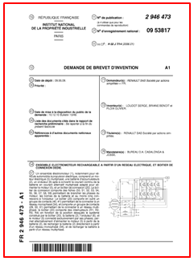
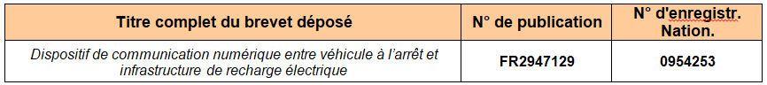

PROTECTION ET INNOVATIONS TECHNIQUES: LE BREVET
Renault, comme les autres constructeurs, investit des sommes importantes dans ces différents domaines, et doit déposer des « brevets d’invention » pour que d'autres sociétés ne bénéficient pas de ces investissements de recherche et développement.
Le brevet protège une innovation technique, c’est-à-dire un produit ou un procédé qui apporte une nouvelle solution technique à un problème technique donné.
Le Brevet : 
A l'aide du site internet : https://worldwide.espacenet.com/?locale=fr_EP
- Trouver le brevet ci-dessous que "Renault S.A.S." a déposé pour protéger son innovation technique.

- Ouvrir sur le site et feuilleter le brevet d’invention« du dispositif de communication » ci-dessus.
==> Appeler le professeur pour valider votre démarche
- Expliquer le principe de cette innovation :
En recherchant dans l’onglet « Brochures INPI » des ressources supplémentaires, répondez brièvement aux questions suivantes:
- Ou doit-on déposer un brevet d'invention pour la France?
- Combien de temps dure un brevet d'invention?
- Qui peut déposer un brevet d'invention?
- Comment faire pour déposer un brevet dans tous les pays de l'Europe?
- Comment faire pour déposer un brevet mondial?
Created with the Personal Edition of HelpNDoc: Produce electronic books easily